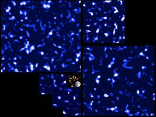

En la imagen, cortesía de CFHTLenS, parte del mapa de la materia oscura obtenido ahora y la imagen integrada muestra el tamaño del mapa anterior.
Astrofísica. Esta materia aún invisible compone una tela cósmica intricada que ahora alcanza más de mil millones de años luz y los investigadores han elaborado el mapa más grande sobre su presencia en distintas partes del universo
Pocas cosas nos ponen tan curiosos que eso que no podemos observar directamente; la materia y la energía oscura tienen los primeros lugares en la lista de los investigadores del mundo fuera de la Tierra. Todo lo que vemos a nuestro alrededor, todo lo que estudiamos en el espacio, las estrellas, los planetas, los satélites, el polvo, el gas y demás, están hechos de material que podemos ver, sentir, medir. Los astrónomos nos cuentan que este tipo de materia la llaman bariónica porque está hecha de la partícula conocida como barión.
Hace ya unas décadas, los astrónomos se dieron cuenta que esta materia no era la única en el Universo, de hecho, ni siquiera llevaba el liderazgo en presencia. La materia oscura, que aparentemente está hecha de otras partículas que no son bariones, y la energía oscura tienen mucha más presencia en el cosmos. Y el primero en presentar este detalle fue Fritz Zwicky en la década de 1930, que dirigió los lentes telescópicos al cúmulo de Coma, un grupo masivo con más de mil galaxias y las observaciones decían que se estaban moviendo muy rápido, tan rápido que debían haber escapado de la atracción gravitacional y andar desparramadas a toda velocidad por el universo profundo. Por eso Zwicky asumía que el cúmulo era mucho más pesado de lo calculado y esa densidad impedía que las galaxias salieran raudas del lugar. Después de esa observación, otras se fueron atesorando de diferentes cúmulos. En todas, el lugar parecía ser mucho más masivo.
Efectivamente, una de las curiosidades de esta materia es que no la podemos ver. Este hecho nos dice que está formada de material distinto, no como los bariones que interactúan entre ellos a través de la gravedad, y esta interacción es lo que permite que tu mano no atraviese la mesa ya que las partículas en cada forma se repelen de manera electroestática. Y es la gran diferencia con la oscura, que no emite ni absorbe luz, la materia interactúa a través de la gravedad únicamente, por eso sólo la ubicamos por medio de los efectos que ocasiona en los movimientos de las galaxias y las estrellas. Hasta el momento, sólo un 4% de la masa bariónica existe en el universo pero toda la masa compone un 23%. Estas materia y energía oscuras son más fantasmales que el neutrino.
Mapa enorme de la materia oscura
Pues bien, ahora, astrónomos utilizando el telescopio en Hawai de Canadá y Francia conocido como “Lensey Survey (CFHTLenS) han producido el mapa en la escala más grande de la materia oscura hasta ahora observado. Los resultados fueron presentados por Catherine Heymans, de la Universidad de Edimburgo, en Escocia y Ludovic Van Waerbeke, de la Universidad Columbia Británica en Vancouver, Canadá, junto a un equipo internacional de investigadores. Los curiosos resultados, presentados durante la reunión de la Sociedad Astronómica Americana en Texas, aseguran que esta materia aún invisible compone una tela cósmica intricada que ahora alcanza más de mil millones de años luz.
El equipo internacional analizó las imágenes de 10 millones de galaxias en cuatro regiones distintas del cielo. Pues cuando las galaxias pasan a través de estos montones de materia oscura, la luz que emiten se distorsiona, y es esta distorsión lo que los científicos han analizado para ir elaborando un mapa cada vez más grande de esta sustancia invisible que sólo podemos detectar indirectamente.
Y el estudio de la astrofísica siempre tiene detalles más que fascinantes. Por ejemplo, las galaxias estudiadas están a unos seis mil millones de años luz de nosotros, lo que quiere decir que la luz analizada es de cuando el universo tenía la mitad de la edad que tiene ahora. No se puede más que sonreír al pensar en esta idea.
La distorsión del tiempo y el espacio
“Al analizar la luz del Universo distante podemos aprender sobre las cosas por las que ha atravesado en su prolongado paseo hasta alcanzarnos. Esperamos que hacer un mapa de más materia oscura comprendamos mejor su relación con las galaxias en el universo”, explica Heymans.
De hecho, como asegura Waerbecke, es el primer vistazo directo a la existencia de la materia oscura en escalas enormes. “Es fascinante poder “ver” la materia oscura utilizando la distorsión del tiempo-espacial. Nos da acceso privilegiado a esta misteriosa masa en el universo que no podemos observar de otra forma. Saber cómo la materia oscura está distribuida es el primer paso hacia el entendimiento de su naturaleza y cómo se integra en el conocimiento actual de la física”.
Los científicos aseguran que en los próximos tres años tendrán diez veces más el espacio cubierto hoy.
Volver a Noticias
Comentarios
Comments powered by Disqus